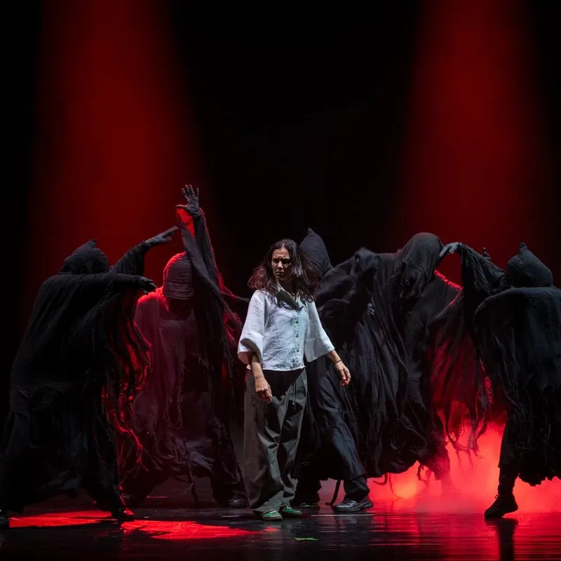
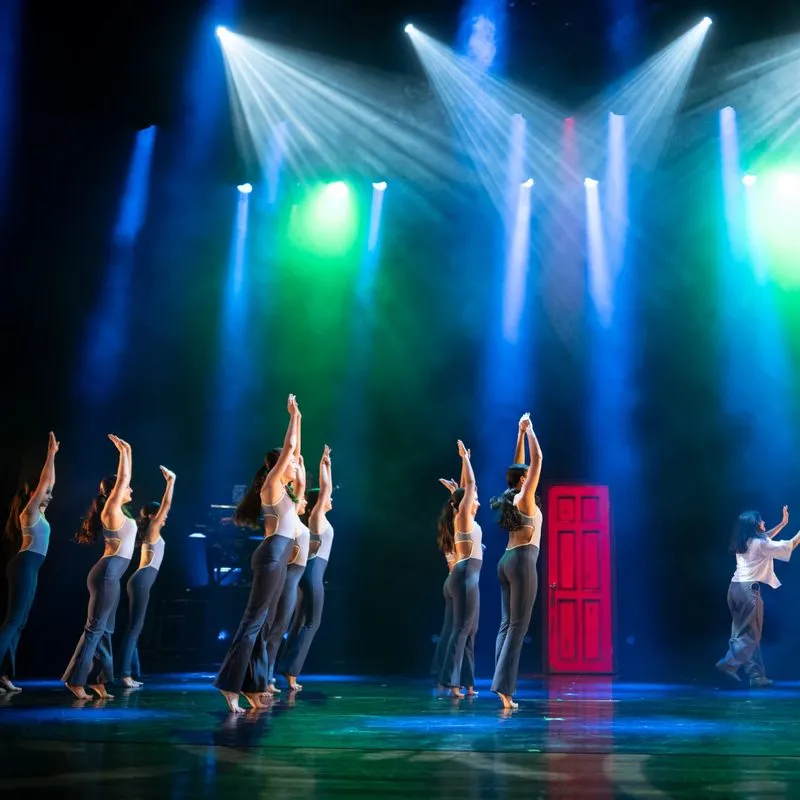
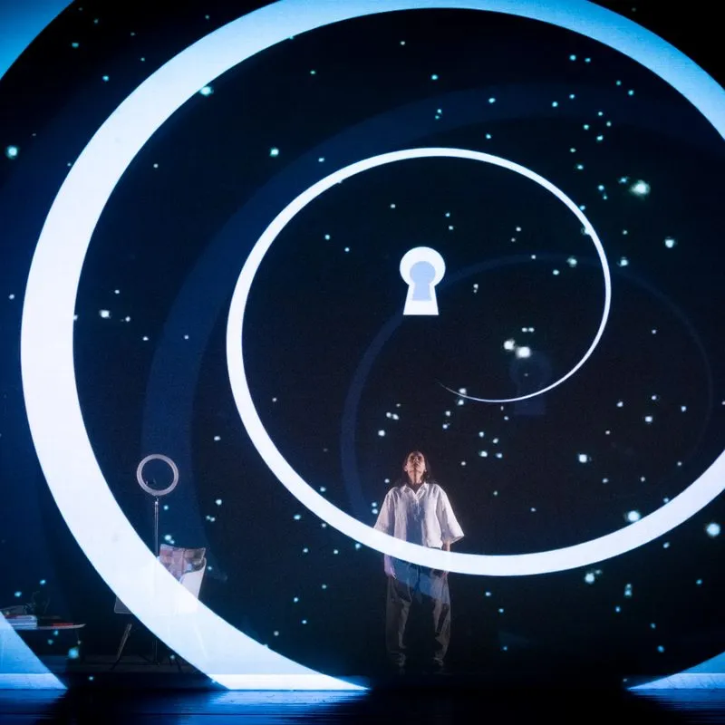
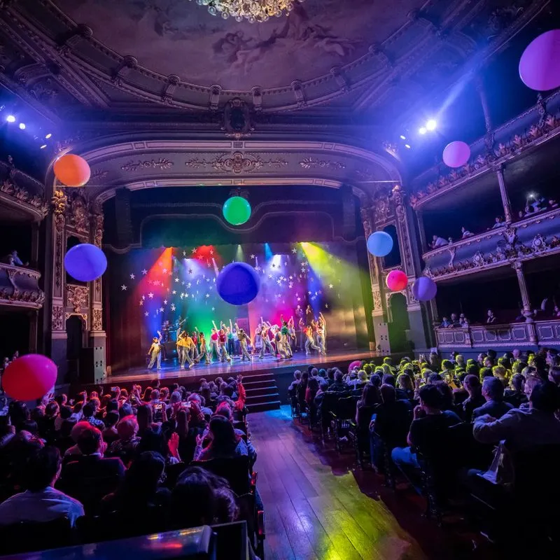

Programme I · Dance, theatre and live music
Still Standing
Teatro Nacional de Costa Rica · 2026
Dance, theatre and live British music. A woman stuck in a routine of screens walks through a door that leads her back to the present, to nature and to other people.
- Venue
- Teatro Nacional de Costa Rica
- Performances
- 2 October 2026 · one performance
- Direction
- Melania Fernández y Jose Pablo García
- Production
- Andamio Escuela de Movimiento
- Lead performer
- Adriana Álvarez
- Cast
- Más de 40 artistas en escena
- My role
- Co-director & lead vocals




Music from the showTest audio